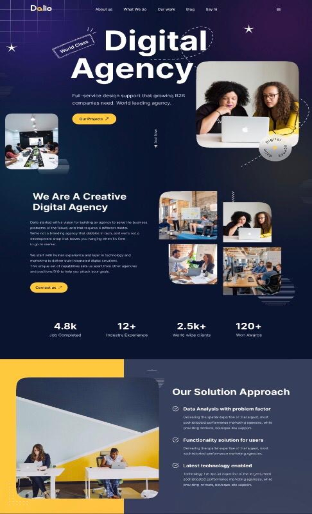
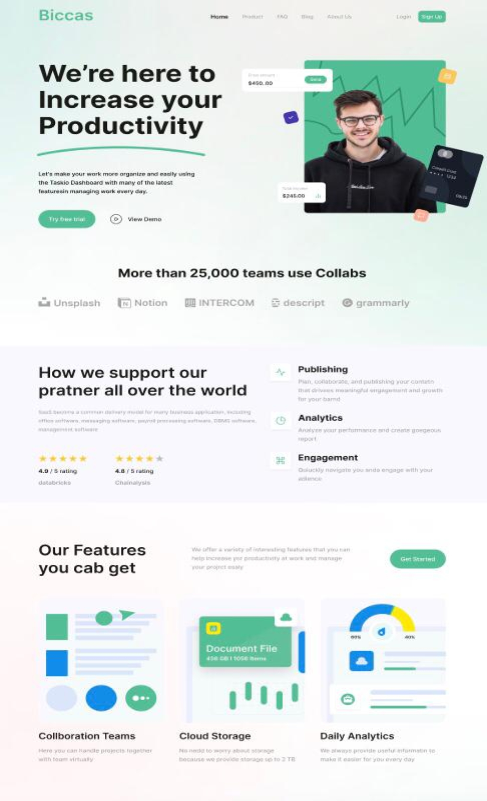
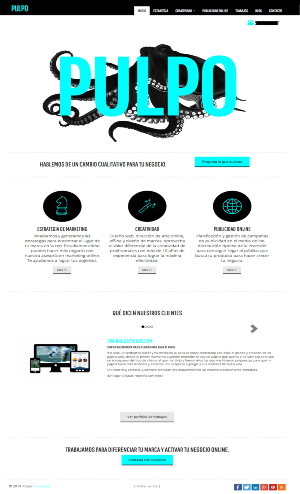
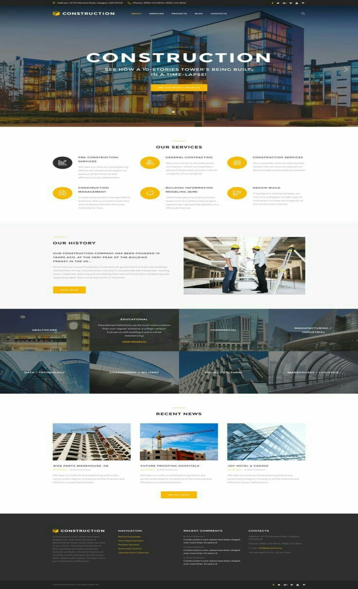
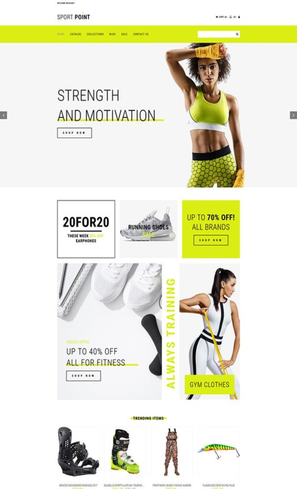
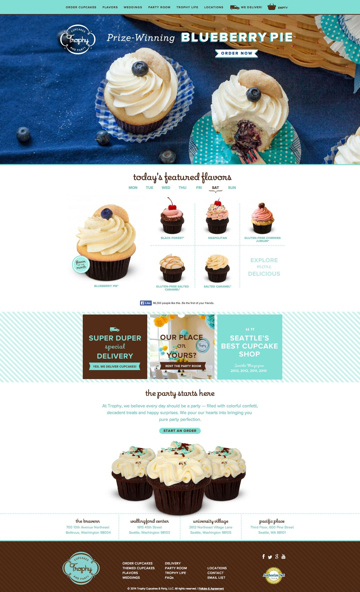

DALIO
Uno de mis proyectos más recientes es Dalio un sitio Web de una Agencia Digital
especializada en darles servicios a empresas de gran importancia, muy reconocida.
Sus servicios y información se muestran aquí así como proyectos en los que han trabajado..

BICCAS
Otro de mis proyectos más recientes Biccas una empresa de publicidad que incrementa la productividad de tu
empresa,
aquí mostramos parte de como esta empresa logra sus objetivos. Un sitio web algo sencillo
pero bastante completo en información

PULPO
Pulpo es un sitio web que cree para una marca de publicidad la cual
tiene como objetivo atraer clientes que contraten sus servicios de
marketing los cuales se exponen en dicha página.

CONTRUCTION
Construction es una página para una empresa de construcción de los
Estados Unidos, tiene como objetivo ofrecer sus diferentes servicios
de construcción al público en gerenal.

SPORT POINT
Página web de la tienda deportiva "Sport Point" donde venden
diferentes articulos deportivos, ropa y zapatos deportivos etc, se
pueden realizar compras inline.

TROPHY
Esta es una página de repostería especializada en cupcakes con un
amplío menú de deliciosos tipos de cupcakes y opción de compra en
línea.